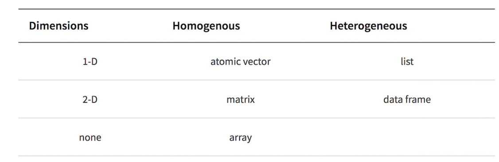

6*6[1] 364*3/4[1] 34+3/5[1] 4.6(4+3)/5[1] 1.4sqrt(144)[1] 12pi[1] 3.141593To install R we can install it from the internet by either googling or
For Windows: https://cran.r-project.org/bin/windows/base/
For Mac: https://cran.r-project.org/bin/macosx/
For Linux: https://cran.r-project.org/bin/linux/
R is a open source statistical programming language. It can used through many Graphic User Interfaces (GUI) my preferences is to use RStudio but VSCode is good and you can also code in base R.
We can install RStudio from https://posit.co/download/rstudio-desktop/
This tutorial will rely on using code written in RStudio and locations of things (Script, Console, Environment, Plots) will be RStudio specific but the code could be run in any GUI.
Scripts are saved code that you are editing (What I am writing in currently), you then execute (run) the code in the ‘console’ (Normally below the script window)
You can execute one line of code by having your cursor on that line in the script or select many lines then click the run buttom or cmd+enter (mac) or ctrl+enter (pc)
Everything to the right of a hastag ‘#’ is not executed, therefore we can use this to make comments or write in scripts
R code can be used to do simple calculations with values or even create lists, vectors, values, dataframes and more complex objects in the “global environment”. (normally top right)
6*6[1] 364*3/4[1] 34+3/5[1] 4.6(4+3)/5[1] 1.4sqrt(144)[1] 12pi[1] 3.141593We can use either <- or = to assign a value, list or dataframe into an object
An object is something (usually some sort of data) that is saved in temporary memory
a<- 17In R we can use functions to tasks for us, they precede a parenthesis (), some are named after what they do and some are less well named,
within functions they have arguments, what you put into these arguments will define how they perform.
We use c() to concatenate elements together, which means combine them into a vector, which is a series of values
b<- c(1,5,5,3,7)We can then perform different functions between objects
a*b[1] 17 85 85 51 119We can even save the results to a new object
c<-a*bThen we can look at what is in the object by running the object
c[1] 17 85 85 51 119We can also create data systematically with R
For example a sequence of 10 values going up by 1
Sequence<-seq(from=1,to=10,by=1)We will come back to generating data systematically later.
In R there are many different types of data, the most common four are Numeric, Interger, Character and Factor. Logical and Complex are also data types but very rarely used explicitly.
Numeric data is any real numbers so 8 or 12.3 or 1.00000002 etc, while Integer data is just whole numbers 3, 4, 111 etc
Character data are words or letters surrounded by quotations (either ” or ‘) such as “A”, “Red”, ’Treated’, Character data has no order to it in Rs ‘mind’
Factor data is like character data but r (or you) have assigned an order to it e.g. “A”, “B”, “C”
As we saw above we can store data in R as an Object, these can be many different types and combinations,
The most common Object types are Vectors, Lists, Matrices, DataFrames and Arrays,
The main differences of these Object types are what types and combinations of data can be stored in them and how many Dimensions they have,
A single group of one data type (it could be Numeric, Character, Integer, Factor), with one dimension is called a Vector.
Vector_Numeric<- c(1.3,5.8,5.122,3.00,7.12)
Vector_Integer<- as.integer(c(1,5,5,3,7)) # we change between data types with these functions
Vector_Character<- c("This","is","A","Character Vector")
Vector_Factor<-as.factor(c("This","is","A","Character", "Vector")) # Notice how r automatically orders alphabetically if we don't tell it the orderMultiple groups of one data type (it could be Numeric, Character, Integer, Factor), with two dimensions is called a Matrix.
Matrix_Numeric<- as.matrix(c(1.3,5.8,5.122,3.00,7.12))
Matrix_Character<- as.matrix(c("This","is","A","Character Matrix"))Multiple groups of a combination of data types or object types (it could be Numeric, Character, Integer, Factor or vectors, dataframes or matrices of these), with two dimensions is called a List. Each element in a list can be a different length to the other elements.
List_Numeric<-list(c(1.3,5.8,5.122,3.00,7.12),
c(1,5,5,3,7))
List_From_Vectors<-list(Vector_Character,Matrix_Numeric,Matrix_Numeric)
List_Different_Lengths<-list(Item1=c(1,2,3,4,5,6),Item2=c("a","B","C","D"), Item3=seq(from=1,to=100,by=1))
List_Different_Lengths$Item1
[1] 1 2 3 4 5 6
$Item2
[1] "a" "B" "C" "D"
$Item3
[1] 1 2 3 4 5 6 7 8 9 10 11 12 13 14 15 16 17 18
[19] 19 20 21 22 23 24 25 26 27 28 29 30 31 32 33 34 35 36
[37] 37 38 39 40 41 42 43 44 45 46 47 48 49 50 51 52 53 54
[55] 55 56 57 58 59 60 61 62 63 64 65 66 67 68 69 70 71 72
[73] 73 74 75 76 77 78 79 80 81 82 83 84 85 86 87 88 89 90
[91] 91 92 93 94 95 96 97 98 99 100Multiple groups of a combination of data types (it could be Numeric, Character, Integer, Factor), with two dimensions is called a Dataframe. Each element of a dataframe must be the last length as the other elements.
df<-data.frame(Column1=c(1.3,5.8,5.122,3.00,7.12),
Column2=c(1,5,5,3,7),
Column3=Vector_Factor)Multiple groups of one data type (it could be Numeric, Character, Integer, Factor or vectors or matrices), with more than two dimensions is called an Array.
Array_1d<-array(c(Matrix_Numeric,c(1.3,5.8,5.122,3.00,7.12)),dim=c(5))
Array_2d<-array(c(Matrix_Numeric,c(1.3,5.8,5.122,3.00,7.12)),dim=c(5,2))
Array_3d<-array(c(Matrix_Numeric,c(1.3,5.8,5.122,3.00,7.12)),dim=c(5,2,2))Arrays are rarely used so probably won’t discuss much further.

Objects have dimensions and we can use a technique called indexing to select specific elements of an object
We use square brackets to do this,
If the object is 1 dimensional one number will return one value
Vector_Numeric[4][1] 3If the object is 2 dimensional, one number will return the column
df[2] Column2
1 1
2 5
3 5
4 3
5 7by adding a comma we can select the next dimension
df[2,4]NULLIf we want all columns but only a specific row we add a comma without a number
df[,2][1] 1 5 5 3 7We can also use multiple numbers inside c() to select multiple elements
df[c(2,4),] Column1 Column2 Column3
2 5.8 5 is
4 3.0 3 CharacterOr we can use -c() to select all but the mentioned elements
df[,-c(2,4)] Column1 Column3
1 1.300 This
2 5.800 is
3 5.122 A
4 3.000 Character
5 7.120 VectorR relies upon packages, groups of specific functions, which can be installed from the internet and then loaded into a script.
Base R, a package always already installed and loaded within R, is very powerful and useful but less user friendly for some tasks.
From Base R we can use the install.packages() function to install a package from online repositories.
R assumes you want to download packages from CRAN (the official online repository but sometimes you might want to download from other repositories)
#install.packages("dplyr") You only have to do this when you first want the package or want to update it.
Once a package is installed we have to tell R that we want to use functions from this package so we load it
library(dplyr)
Attaching package: 'dplyr'The following objects are masked from 'package:stats':
filter, lagThe following objects are masked from 'package:base':
intersect, setdiff, setequal, unionThis needs to be run every new R session when this package is used.
We can now run functions from the dplyr library, specifically dplyr is a package, which is part of a group or ecosystem of packages called the tidyverse
We will use this group of packages for reading and writing data into and out of R (readr), manipulating and organising data (dplyr and tidyr) and visualisng data (ggplot2)
First we can make some data into a dataframe, explore this data, transform and add to it, then we will make some figures with it.
R has some very useful random and non-random data generation functions
Year <- seq(from=1950,to=2023,by=1)
Treatment <- c("Control","Treatment 1","Treatment 2")
Rep<- seq(from=1,to=10,by=1)These are three vectors, which we can check information about them with a few simple functions
length(Year)[1] 74summary(Year) Min. 1st Qu. Median Mean 3rd Qu. Max.
1950 1968 1986 1986 2005 2023 length(Treatment)[1] 3summary(Treatment) Length Class Mode
3 character character length(Rep)[1] 10summary(Rep) Min. 1st Qu. Median Mean 3rd Qu. Max.
1.00 3.25 5.50 5.50 7.75 10.00 We want to combine these vectors so we have a row for each rep, year and treatment, we can do this by expanding the grid and create a new dataframe called df.
We can inspect specific elements of a dataframe too
df<-expand.grid(Year=Year,Treatment=Treatment,Rep=Rep)
class(df) # type of object[1] "data.frame"nrow(df) # number of rows[1] 2220ncol(df) # number of columns[1] 3dim(df) # dimensions of object[1] 2220 3head(df) # the first 6 rows of the df Year Treatment Rep
1 1950 Control 1
2 1951 Control 1
3 1952 Control 1
4 1953 Control 1
5 1954 Control 1
6 1955 Control 1tail(df) # the last 6 rows of the df Year Treatment Rep
2215 2018 Treatment 2 10
2216 2019 Treatment 2 10
2217 2020 Treatment 2 10
2218 2021 Treatment 2 10
2219 2022 Treatment 2 10
2220 2023 Treatment 2 10This df is all the meta data we want for our dataframe that we want to now make up some response data
Response<-rnorm(n=nrow(df),mean = 15,sd=8) # we need the response to be same length as the df so we use nrow() for the number of values we want.We can then combine this to our df, the dollar sign is used to select one dimension (column) from within an object (here a dataframe)
df$Response isn’t present in the data but by assigning our Response vector to it with <- it adds a new column
df$Response<-ResponseOnce we have our data set we can save it to our computer, but where that is on our computer is important.
To do this we need to know where R is looking for files on your computer. This is called your current working directory.
This information is displayed at the top of the console in Rstudio or you can use the base R function getwd().
We can set our working directory to change where this is, or we can use our saving/loading functions to look in the correct folders (recommended).
Lets find where we are, create a new folder in that location then save our df to that location.
getwd()[1] "/Users/bfrd/Research/Nantes/Teaching2023/R_Introduction"dir.create("NewFolderName/")Warning in dir.create("NewFolderName/"): 'NewFolderName' already existsWe now can save our df we created to this new folder using the write.csv() function from base r, or even better the write_csv() function from the readr package
To save to our folder we only need to say the directory we want the file saved to followed by a /, then the name of the file with file extension.
Inside reading and writing functions such as write_csv() the main argument will be where is the file to be save to or taken from and we write this out with as a character string inside quotations.
# install.packages("readr")
library(readr)
write_csv(df,"NewFolderName/OurNewFile.csv")Often we don’t want to make fake data as done here, but we will have our own data set that we want to read in from our computer to then clean, organise, manipulate, visualise, analyse and report on.
These data are normally saved as excel spreadsheets. However, Excel is awful and should never be used for reproducible science! That being said it is often where a data spreadsheet starts before we bring it into R.
Excel spreadsheets (.xsl) have lots of added information that actually is not needed and becomes complicated to work with so the easiest file format to read into R is a Comma Separated Values sheet (.csv)
We can convert our spreadsheet in Excel to a .csv file, then we read in the .csv file with the base function read.csv() or even better the readr function read_csv().
Again, inside reading and writing functions such as read_csv() the main argument will be where is the file and we write this out with as a character string inside quotations.
To navigate up or down inside folders on your computer you use / to signify a folder, with the highest level folder on the far left
For example:
My_DF<-read_csv("NewFolderName/OurNewFile.csv")Rows: 2220 Columns: 4
── Column specification ────────────────────────────────────────────────────────
Delimiter: ","
chr (1): Treatment
dbl (3): Year, Rep, Response
ℹ Use `spec()` to retrieve the full column specification for this data.
ℹ Specify the column types or set `show_col_types = FALSE` to quiet this message.